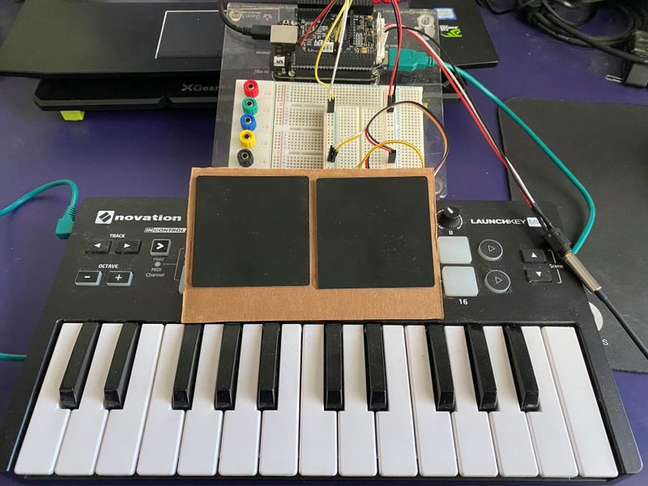
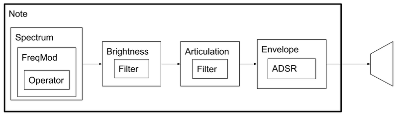
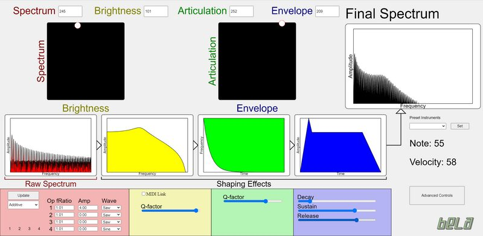
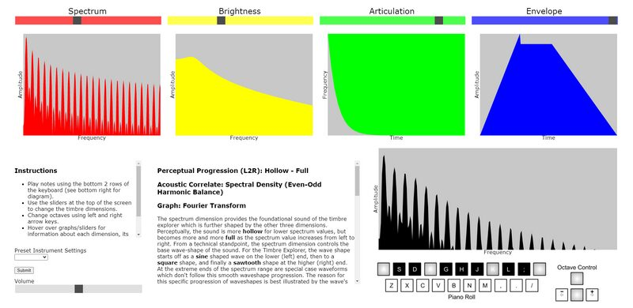

The Timbre Explorer: A Synthesizer Interface for Educational Purposes and Perceptual Studies
Abstract
When two sounds are played at the same loudness, pitch, and duration, what sets them apart are their timbres. This study documents the design and implementation of the Timbre Explorer, a synthesizer interface based on efforts to dimensionalize this perceptual concept. The resulting prototype controls four perceptually salient dimensions of timbre in real-time: attack time, brightness, spectral flux, and spectral density. A graphical user interface supports user understanding with live visualizations of the effects of each dimension. The applications of this interface are three-fold; further perceptual timbre studies, usage as a practical shortcut for synthesizers, and educating users about the frequency domain, sound synthesis, and the concept of timbre. The project has since been expanded to a standalone version independent of a computer and a purely online web-audio version.
Author Keywords
timbre, perception, synthesis
CCS Concepts
•Applied computing → Sound and music computing; Interactive learning environments;
Introduction
Timbre is thought of as any auditory property other than pitch, duration, and loudness that allows two sounds to be distinguished [1]. This project sought to build on past research by implementing a synthesis model based on an aggregate theory of timbre. The result is the Timbre Explorer. Its applications are primarily educational purposes; to demonstrate theoretical timbral dimensions and provide an introduction to the synthesis of sounds. In addition, the Timbre Explorer combines visual and auditory learning to practically demonstrate the advanced concept of the frequency domain in an accessible way. It also functions as a performance instrument and will be used in studies to further our understanding of timbre.
Background
In the most popular approach for the study of timbre, multi-dimensional scaling (MDS) is used to construct a Euclidian space that best recreates a series of dissimilarity ratings between sounds as distances [1]. Across all timbre MDS studies, dimensions related to “brightness” and temporal envelope have consistently been found [2]. Of the studies that found third or fourth dimensions, the acoustic correlates are not as consistent, but are usually spectral density (the power distribution of frequency components, see also even-odd harmonic distribution) and/or spectral flux. Earlier MDS studies more often found spectral flux as the third component but some timbre space synthesizers have instead found spectral density to be more salient [3]. Moreover, the number of dimensions derived is apparently influenced by the range of instruments used. No link has been found between participant background and the derived dimensions. Following from these findings of past timbre studies, the Timbre Explorer is controlled through 4 parameters: spectrum, brightness, articulation, and envelope.
Previous timbre space instruments have further influenced the design of the Timbre Explorer. Some of the earliest examples of these were the works of David Wessel who observed that “a timbre space could be used to specify perceivable timbral transpositions” [4]. The original Timbre Explorer design, seen in Figure 1, was inspired by the work of the Intuitive Sound Editing Environment [5], which ostensibly uses the same four dimensions. However, the Timbre Explorer has a much more simplified synthesis model to make it better suited for educational purposes. Usage of timbre spaces in education is also precedented by the Timbre Perception Test [6], a system with fewer dimensions and a smaller scope of purpose.
Timbre Explorer
The objective of this project was an introductory tool for the concept of timbre. To ground timbre in a familiar context, the Timbre Explorer needed to practically re-create real instrument sounds while still fitting within the theoretical spaces proposed by MDS studies. For coherency, it was also important that these parameters should have a more or less continuous effect.


Figure 1: Original prototype of the Timbre Explorer, featuring from top to bottom the Bela microcontroller, two 2-dimensional touch surfaces and a MIDI keyboard.
Synthesis Model
The spectrum parameter controls the base, unfiltered spectrum of the sound. Traversing spectrum values largely follows a transition from a sine wave to a square wave to a sawtooth; starting with the fundamental frequency, gradually adding odd-harmonics, and then adding even ones. Brightness, experimentally correlated to spectral centroid [7], is recreated as a frequency filter. The filter is either low-pass or high-pass, depending on whether the parameter is low or high respectively. In both cases, the cutoff frequency directly scales with the parameter value, with the center as a neutral setting where the filter is not applied. Articulation controls the initial spectro-temporal evolution of the timbre, accounting for the asynchrony in the rise of harmonics. Its implementation is a filter with a changing cutoff frequency, where the rate of change of the cutoff is affected by the parameter’s distance from the neutral center. Above the center, the filter is a high-pass with a decreasing cutoff, below it is a low-pass with an increasing cutoff. Similar to brightness, no effect is applied at the center of the range. Lastly, the envelope parameter controls the temporal amplitude envelope, based on the Attack, Decay, Sustain, Release (ADSR) paradigm. The envelope value primarily affects the attack time. At low envelope values, attack time is at a minimum to emulate percussive sounds, and at a maximum at high values for sounds with softer onsets. Altogether, these dimensions as listed form a consecutive signal chain: the signal starts as a waveform determined by the spectrum, which is then filtered by the brightness and then the articulation filters. The final effect is a gain that follows the envelope’s ADSR profile. The result is an extremely flexible system capable of synthesizing a wide range of sounds and recognizably mimicking various instruments. Its modular code design is shown in Figure 2. The Timbre Explorer achieves what typically requires a dizzying array of ranges and settings using just four continuous parameters.


Figure 2: Class structure of the synthesis model code. Boxes within boxes represent member classes of the outer class.
Interface Design
Several versions of the Timbre Explorer have been implemented for different purposes. Of these, an important component is the graphical user interface (GUI), which provides live visual feedback and information about the current timbre settings. Central to the the GUI is the informational block diagram (IBD), which demonstrates the simplicity of the synthesis model. Each “block” corresponds to a dimension, and also displays a relevant real-world graph of numerical behavior that reacts in real time to reflect changes in the dimension values. In order, the spectrum graph displays the Fourier transform of the base waveform, the brightness shows its filter’s frequency response function, the articulation graphs how its cutoff frequency changes over time, and the envelope graphs the ADSR’s amplitude over time. A final, fifth block diagram element shows the live result of an FFT of the output sound, visualizing the combined effect of the four dimensions. This IBD is the key to introducing unfamiliar users to the frequency domain; they can visually observe how the frequency spectrum changes and, through audio, implicitly learn how it differentiates different timbres.


Figure 3: GUI for the original prototype, featuring current touch sensor position, IBD, and advanced controls.
The hardware and the GUI varies between the different versions of the Timbre Explorer. The original Timbre Explorer controls the four timbre parameters with two 2-dimensional touch surfaces, with a MIDI keyboard to trigger notes. It can also be connected to a computer to display an in-browser GUI (Figure 3) that reflects the last-touched position of the touch sensors and the IBD. In addition, this version’s GUI also features advanced synthesis controls that go beyond the constraints of the 4-parameter system. These advanced controls serve to offer a form of progression for users new to synthesis, while also acting as tools to be used by experts to better tune the timbre they desire. At the heart of this prototype is a Bela microcontroller, which handles hardware IO and runs both the C++ signal processing code and the Javascript GUI code.
A standalone version with four knobs instead of 2D touch surfaces has also been designed to be more compact and used independently of a computer. An enclosure is currently lacking and will be part of future work.


Figure 4: Screenshot of the Web Version of the Timbre Explorer.
The third version is the opposite of the standalone, a fully online website implemented in Javascript with web-audio API. A screenshot is shown in Figure 4. The parameters are controlled with four separate range elements and notes are triggered using the computer keyboard as a piano roll. This version has a stable prototype but other features including data collection are planned. Another planned feature is saving sounds to be used as stimuli in other research. This version will be used in an online gamified user study, planned for this summer, to test the salience of the dimensions and collect feedback for future improvements. The user study will also verify whether using the Timbre Explorer aids in understanding the concepts of timbre, the frequency domain, and sound synthesis.
Conclusions
The Timbre Explorer is a practical implementation of theorized timbre spaces. Users navigate a 4-dimensional space that changes the sound's spectrum, brightness, articulation, and envelope. The functionality and educative potential is greatly enhanced by the graphical user interface. Video demonstrations of the original
and standalone prototype
are here, with the web version located here:
https://vagabond-grove-brook.glitch.me/. The code repositories for all versions are located here: https://github.com/jRoshLam. For future work, user studies will be conducted to improve the prototype and observe its potential to educate users about the nature of timbre and its related topics. This project represents the potential of a greatly simplified synthesis model as well as a way to intuitively introduce the ubiquitously useful frequency domain.
Citations
Siedenburg, K., Saitis, C. and McAdams, S., 2019. The Present, Past, and Future of Timbre Research. In Timbre: acoustics, perception, and cognition (pp. 1-19). Springer, Cham.
↩McAdams, S. (2019). The perceptual representation of timbre. In Siedenburg, K., Saitis, C., McAdams, S., Popper, A. N., and Fay, R. R., editors, Timbre: Acoustics, Perception, and Cognition, (pp. 23–57). Springer, Cham.
↩Seago, A., 2013. A new interaction strategy for musical timbre design. In Music and human-computer interaction (pp. 153-169). Springer, London
↩Momeni, A. and Wessel, D., 2003, May. Characterizing and controlling musical material intuitively with geometric models. In Proceedings of the 2003 conference on New interfaces for musical expression (pp. 54-62).
↩Vertegaal, R. and Bonis, E., 1994. ISEE: an intuitive sound editing environment. Computer Music Journal, 18(2), pp.21-29.
↩Lee, H. and Müllensiefen, D., 2020. The Timbre Perception Test (TPT): A new interactive musical assessment tool to measure timbre perception ability. Attention, Perception, \& Psychophysics, pp.1-18.
↩Saitis, C. and Siedenburg, K. (2020). Brightness perception for musical instrument sounds: Relation to timbre dissimilarity and source-cause categories. J. Acoust. Soc. Am., 148(4):2256–2266.
↩